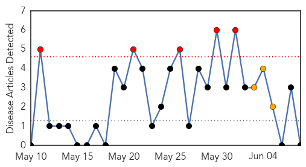

Unknown
30-Day Web Trend
4 alerts, 1 warnings

30-Day Twitter Trend
4 alerts, 4 warnings

Article Locations

Article Confidences

Top Articles:
- 1.000
- The World On Arirang
- 1.000
- South Korea Reports Fifth MERS Death, 14 More Cases
- 1.000
- Is the MERS virus likely to reach the UK? How worried we should be as sixth person dies in South Korea
- 0.999
- MERS Virus Claims Another Victim in South Korea
- 0.999
- Top Korean hospital new source of MERS outbreak, news, Health News, AsiaOne YourHealth
- 0.999
- South Korea MERS Cases Rise as Hong Kong Increases Alert Level
- 0.999
- (LEAD) S. Korea reports 23 new cases of MERS, bringing total to 87
- 0.999
- S. Korea reports sixth death from MERS, 23 new cases
- 0.999
- Case Total Rises to 87, South Korea to Track Cellphones to Prevent the Spread
- 0.999
- UN Sending Officials to South Korea as 2300 Quarantined over MERS Outbreak
- 0.999
- MERS Outbreak in South Korea Increasing but Not Spreading
- 0.999
- The World On Arirang
- 0.999
- MERS outbreak in South Korea increasing but not spreading
- 0.999
- CDC Urges Health Officials To Watch For Bird Flu In Humans
- 0.998
- South Korea records sixth death from Mers
- 0.998
- MERS outbreak in South Korea
- 0.998
- MERS Outbreak in South Korea Closes Schools
- 0.998
- Over 2,300 quarantined, 1,800 schools closed in S Korea over MERS
- 0.997
- Samsung group chairman won’t leave infected hospital as MERS hits South Korea
- 0.997
- 6th MERS Death Reported in South Korea
- 0.996
- MERS infections in S. Korea surge to 87 with 23 new cases - Xinhua
- 0.996
- MERS outbreak: 2,300-plus quarantined; 1,800 schools closed in South Korea
- 0.996
- S.Korea reports 23 new MERS infections, 1 more death
- 0.994
- MERS Outbreak Worsens in South Korea
- 0.994
- MERS proves fatal to severely ill
- 0.994
- MERS Virus in South Korea Intensifies, Seoul Schools Close Down
- 0.994
- 6th person dies from virus in South Korea
- 0.993
- [Editorial] Cooperation with WHO
- 0.992
- S.Korea MERS outbreak: 2,300 quarantined; 1,300 schools closed
- 0.991
- South Korea reports jump in MERS infections, sixth patient dies
- 0.988
- South Korea Using Cellphones to Curb Spreading, 2,300 Quarantined & 87 Cases Reported
- 0.988
- The World On Arirang
- 0.988
- MERS Virus kills Sixth Person in South Korea
- 0.987
- Sixth fatality in South Korea's 'MERS' outbreak
- 0.986
- WHO team joins fight against MERS
- 0.985
- Asia on high alert over possible MERS spread, Others news, Health News, AsiaOne YourHealth
- 0.985
- 23 New MERS Cases in S. Korea
- 0.985
- China trying to reach 13 people near MERS patient
- 0.984
- Thailand’s Public Health MERS ready
- 0.984
- Gov't checks travel history of contact with MERS patients
- 0.983
- USFK warns against visiting Korean hospitals amid MERS outbreak
- 0.983
- USFK warns against visiting Korean hospitals amid MERS outbreak
- 0.981
- Yonhap News Summary
- 0.980
- Teenager becomes first MERS-infected SKorean student
- 0.980
- KBS World Radio
- 0.979
- South Korea vows ‘all-out’ effort to curb growing MERS outbreak
- 0.978
- Sixth Mers death in South Korea as more cases emerge
- 0.977
- A critical view from Hong Kong
- 0.976
- See How Lovers Carry on With The MERS Epidemic In South Korea (Photos)
- 0.976
- KBS World Radio
Showing top 50 articles...
Top Tweets:
- 0.883
- RT: The number of people in MERS quarantine rises to 2,508; 583 cleared: Health Ministry MERS Korea
- 0.703
- RT: Seven people dead and 95 confirmed cases of Middle East respiratory syndrome, or MERS, in South Korea, officials say.http://t.c…
- 0.636
- Avian Flu Diary: Korea Adds 23 More MERS Cases http://t.co/l9tUVlGP8Z
- 0.615
- Nearly 1/3 of women hospitalized with lab-confirmed flu during 14-15 season were pregnant. Read more here: http://t.co/mcjQtDAcZA
- 0.530
- South Korea reports 23 new cases of MERS virus, total rises to 87 http://t.co/c9uZWZ6Z0r
- 0.515
- RT: MERS....Middle East Respiratory Syndrome....we need to pay attention. Not much known about Mers but appears deadly. https:…
West Nile Virus
30-Day Web Trend
5 alerts, 3 warnings

30-Day Twitter Trend
0 alerts, 0 warnings

Article Locations

Article Confidences

Top Articles:
-
No articles found for Jun 08, 2015
Top Tweets:
-
No tweets found for Jun 08, 2015